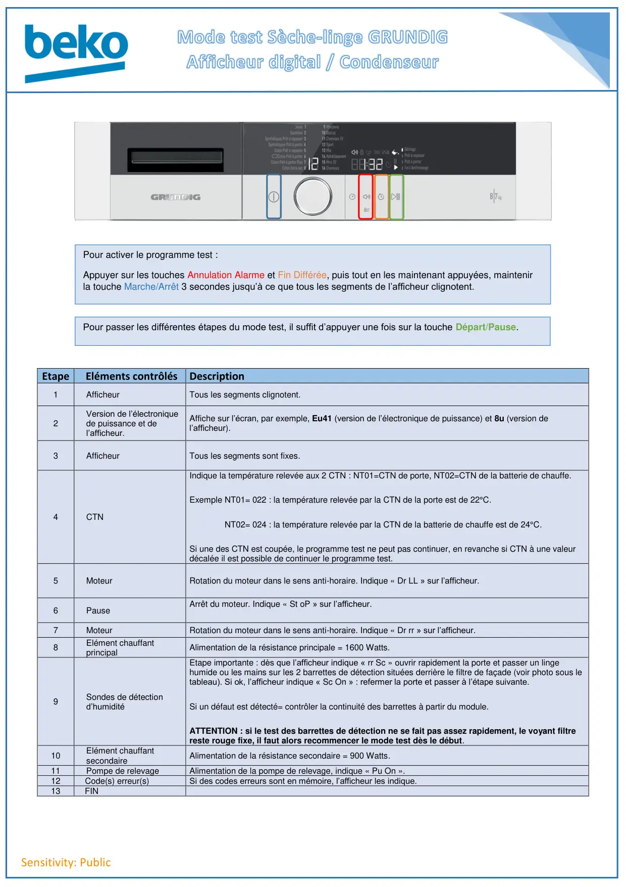
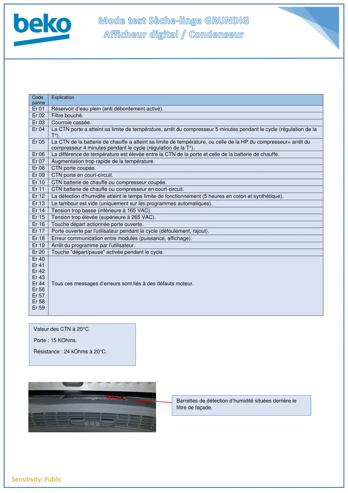

Prog Test seche linge Gundig Afficheur Condenseur Version 1

Sensitivity: PublicEtape Eléments contrôlésDescription1AfficheurTous les segments clignotent.2Version de l’électroniquede puissance et del’afficheur.Affiche sur l’écran, par exemple, Eu41 (version de l’électronique de puissance) et 8u (version del’afficheur).3AfficheurTous les segments sont fixes.4CTNIndique la température relevée aux 2 CTN : NT01=CTN de porte, NT02=CTN de la batterie de chauffe.Exemple NT01= 022 : la température relevée par la CTN de la porte est de 22°C.NT02= 024 : la température relevée par la CTN de la batterie de chauffe est de 24°C.Si une des CTN est coupée, le programme test ne peut pas continuer, en revanche si CTN à une valeurdécalée il est possible de continuer le programme test.5MoteurRotation du moteur dans le sens anti-horaire. Indique « Dr LL » sur l’afficheur.6PauseArrêt du moteur. Indique « St oP » sur l’afficheur.7MoteurRotation du moteur dans le sens anti-horaire. Indique « Dr rr » sur l’afficheur.8Elément chauffantprincipalAlimentation de la résistance principale = 1600 Watts.9Sondes de détectiond’humiditéEtape importante : dès que l’afficheur indique « rr Sc » ouvrir rapidement la porte et passer un lingehumide ou les mains sur les 2 barrettes de détection situées derrière le filtre de façade (voir photo sous letableau). Si ok, l’afficheur indique « Sc On » : refermer la porte et passer à l’étape suivante.Si un défaut est détecté= contrôler la continuité des barrettes à partir du module.ATTENTION : si le test des barrettes de détection ne se fait pas assez rapidement, le voyant filtrereste rouge fixe, il faut alors recommencer le mode test dès le début.10Elément chauffantsecondaireAlimentation de la résistance secondaire = 900 Watts.11Pompe de relevageAlimentation de la pompe de relevage, indique « Pu On ».12Code(s) erreur(s)Si des codes erreurs sont en mémoire, l’afficheur les indique.13FINPour passer les différentes étapes du mode test, il suffit d’appuyer une fois sur la touche Départ/Pause.Pour activer le programme test :Appuyer sur les touches Annulation Alarme et Fin Différée, puis tout en les maintenant appuyées, maintenirla touche Marche/Arrêt 3 secondes jusqu’à ce que tous les segments de l’afficheur clignotent.
1 / 2
Sensitivity: PublicCodepanneExplicationEr 01Réservoir d’eau plein (anti débordement activé).Er 02Filtre bouché.Er 03Courroie cassée.Er 04La CTN porte a atteint sa limite de température, arrêt du compresseur 5 minutes pendant le cycle (régulation de laT°).Er 05La CTN de la batterie de chauffe a atteint sa limite de température, ou celle de la HP du compresseur= arrêt ducompresseur 4 minutes pendant le cycle (régulation de la T°).Er 06La différence de température est élevée entre la CTN de la porte et celle de la batterie de chauffe.Er 07Augmentation trop rapide de la température.Er 08CTN porte coupée.Er 09CTN porte en court-circuit.Er 10CTN batterie de chauffe ou compresseur coupée.Er 11CTN batterie de chauffe ou compresseur en court-circuit.Er 12La détection d'humidité atteint le temps limite de fonctionnement (5 heures en coton et synthétique).Er 13Le tambour est vide (uniquement sur les programmes automatiques).Er 14Tension trop basse (inférieure à 165 VAC).Er 15Tension trop élevée (supérieure à 265 VAC).Er 16Touche départ actionnée porte ouverte.Er 17Porte ouverte par l'utilisateur pendant le cycle (défoulement, rajout).Er 18Erreur communication entre modules (puissance, affichage).Er 19Arrêt du programme par l'utilisateur.Er 20Touche "départ/pause" activée pendant le cycle.Er 40Er 41Er 42Er 43Er 44Er 56Er 57Er 58Er 59Tous ces messages d’erreurs sont liés à des défauts moteur.Valeur des CTN à 20°C.Porte : 15 KOhms.Résistance : 24 kOhms à 20°C.Barrettes de détection d’humidité situées derrière lefiltre de façade.
2 / 2